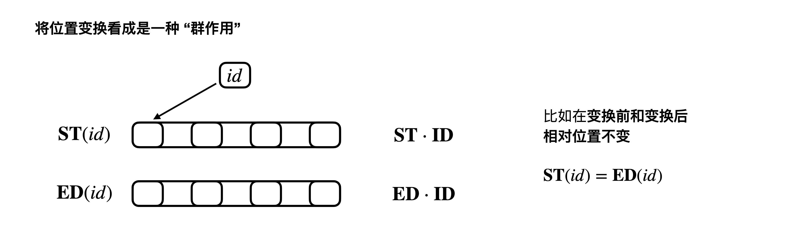
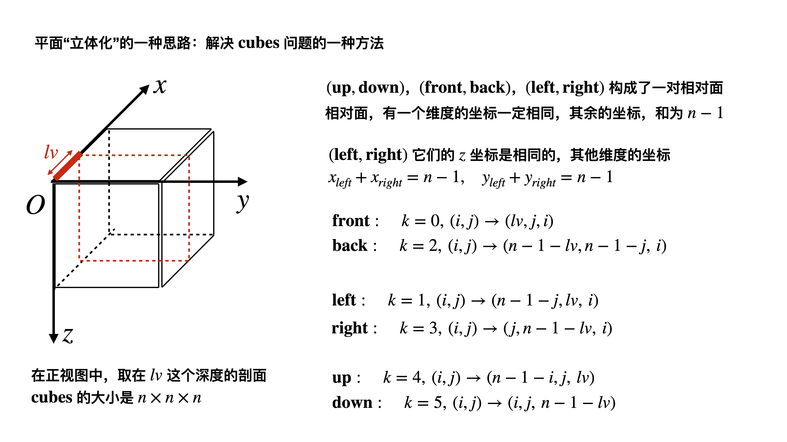
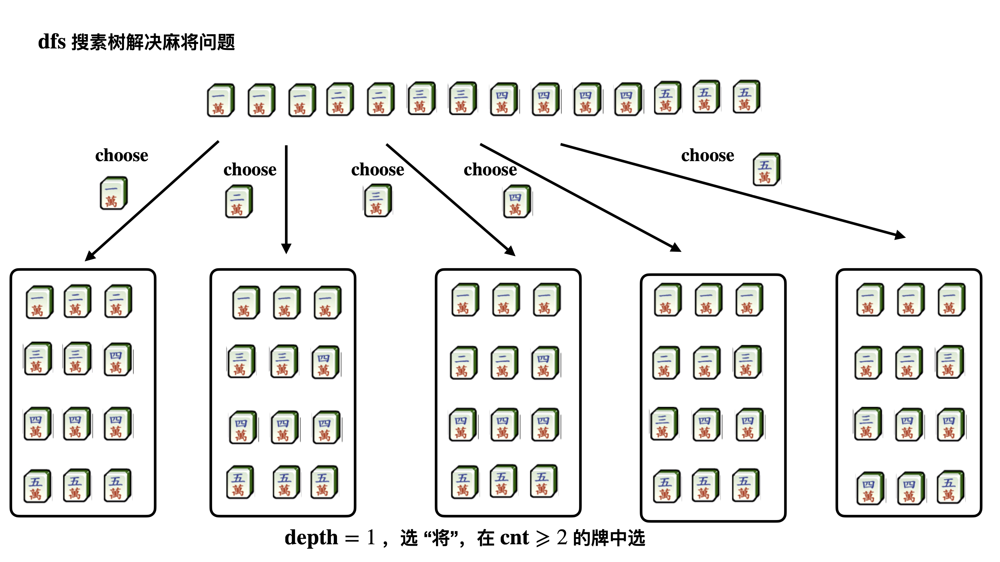
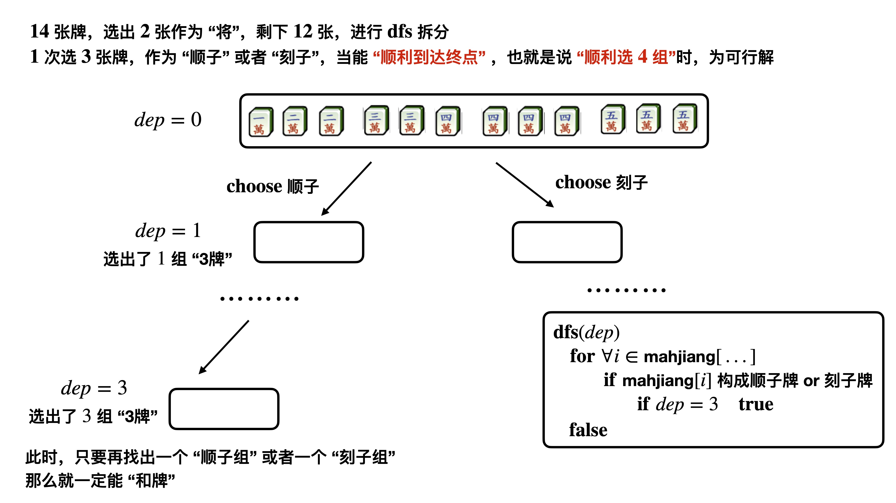
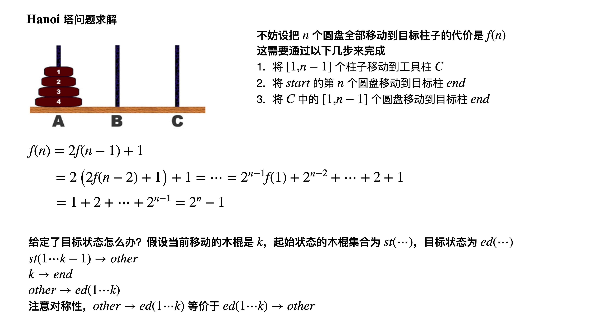
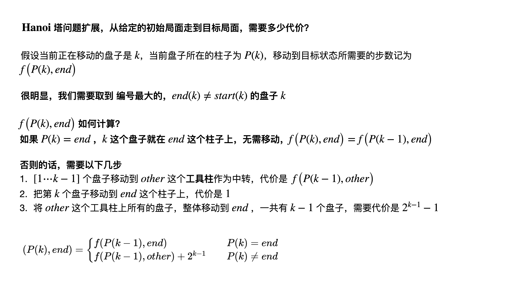
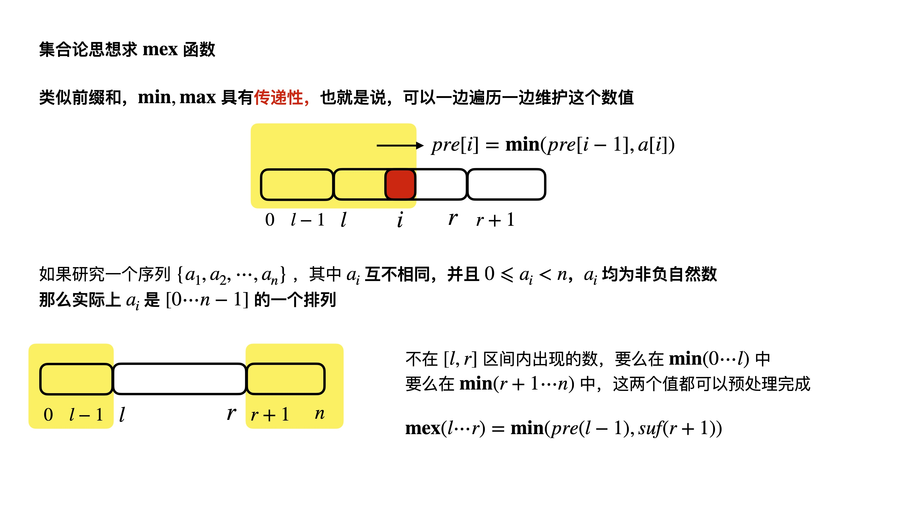
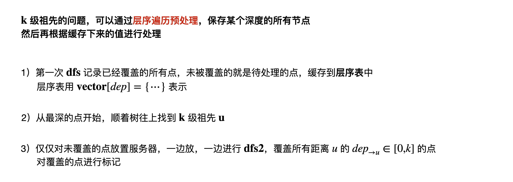

算法设计基础（一）
算法设计基础，对贪心，动态规划，双指针等基础算法
做了一个总结和回顾
问题求解策略

1 | const int maxn = 1e4 + 10; |
处理立方体问题的一种思路
ZOJ2714

algorithm
视图，原视图为
- 对于每个坐标，逐层检查
- 如果符合 continue，检查下一层
- 如果，那么表示这一层未被染色
- 如果, delete
并且标记 删除操作未完成
- 一直删除，到不能删除为止
1 | const int maxn = 10 + 1; |
dfs用能否顺利做完来递归
UVA11210


使用cnt+dfs需要注意的点
因为递归成功的时候，cnt值是搜索树最底层的值
也就是说，递归判断“和牌”成功的时候, cnt数组的值被打乱了
为搜索树最底层的cnt
所以每次枚举一个新的牌，都必须对cnt数组进行初始化
1 |
|
Hanoi塔问题
UVA10795


1 | const int maxn = 60 + 5; |
字典序问题处理
给个算法模版
1 | template<class T> |
集合思想求mex
在博弈论问题中，我们常常需要求区间 的 mex函数
即在区间 中，最小的未出现的 自然数

1 | const int maxn = 1e5 + 10; |
树上的最优化问题
树形结构，最常见的是要把无根树转换成为有根树
UVA1267

特别注意，如果使用
1 | vector<int> G[maxn]; |
来建立无根树，实际上是一个无向图
叶子节点如何判定？实际上是
1 | G[u].size() == 1 |
的点是叶节点
另外，dfs 处理无根树转换成为有根树问题的时候
常常需要处理子树
子树需要把 的 重置为
1 | void dfs(int u, int pa, int dep) |
1 |
|
本博客所有文章除特别声明外，均采用 CC BY-NC-SA 4.0 许可协议。转载请注明来自 算法小站！
打赏
 微信
微信 支付宝
支付宝


评论